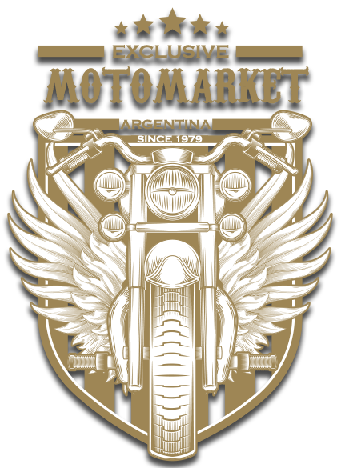

¿Puedo personalizar mi moto?
Por supuesto. A través de la página de Moto Market podrá elegir la marca y modelo de la moto que usted desee, personalizar el color y agregar accesorios si así lo quisiera. Contamos con una amplia gamma de adicionales para darle personalidad a su vehículo, cualquiera sea su gama. Desde pintura personalizada hasta accesorios distintivos. No dude en consultar con nuestro personal especializado a traves del chat de la página.¿Cómo retiro mi moto?
Una vez aprobada la transaccion un representante de Moto Market se comunicará con usted para coordinar la entrega. Si abona con tarjeta de credito, espere la confirmacion dentro de las 24 horas hábiles siguientes a la fecha de compra. Si realiza una transferencia, una vez confirmada nos comunicaremos con usted. El plazo estandar de acreditación de una transferencia bancaria es de 48 a 72 horas hábiles dependiendo de la entidad bancaria.¿Hacen envíos a todo el país?
En Moto Market estamos comprometidos a que todos los que así lo deseen en Argentina puedan tener su moto. Contamos con un servicio de entrega a domicilio de alcance nacional. Los costos varían de acuerdo a la región:- NEA (Chaco, Corrientes, Misiones, Formosa): $1500
- NOA (Jujuy, Salta, Tucumán, Catamarca, La Rioja y Santiago del Estero): $1000
- Centro (San Juan, San Luis, Mendoza, Santa Fe, Entre Rios y La Pampa): $1200
- AMBA (CABA y Buenos Aires): $1000
- Patagonia 1 (Neuquen, Río Negro y Chubut): $1500
- Patagonia 2: (Santa Cruz y Tierra del Fuego): $2000
¿Las compras tienen garantía?
Todas las compras realizadas a través de nuestra web o en las sucursales tienen -además de la garantía del fabricante- un período de garantía de Moto Market de un año que cubre daños durante el traslado (en caso de envíos) y garantía por defectos de fábrica (solo aplicable en los casos en que no esté disponible la garantía del fabricante).¿Cómo es su política de cambios y devoluciones?
Una vez que la moto salió del depósito no se aceptan cambios ni devoluciones tanto del valor del vehículo como del envío. El retraso en la entrega puede ser susceptible de reclamo, dependiendo de la causa. Si la demora es por cuestiones climáticas extremas, o ajenas a la empresa (protestas, cortes de ruta, etc.) Moto Market no considera que la demora sea su responsabilidad.© Motomarket. Todos los derechos reservados